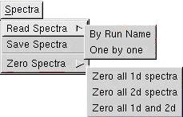
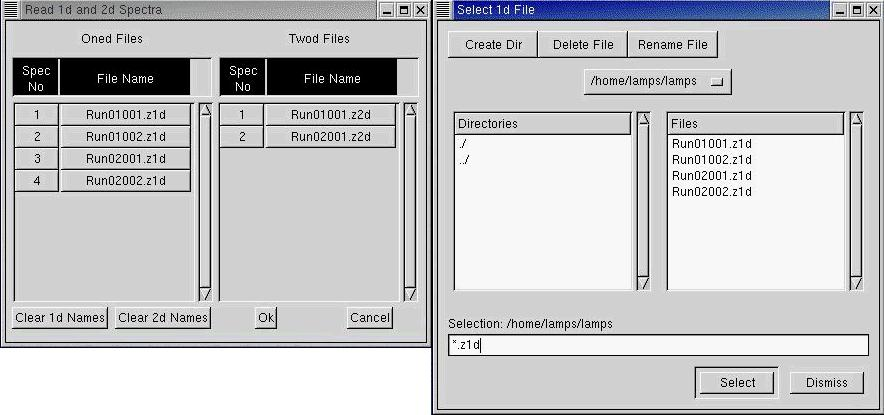

Read Spectra It is possible to read previously acquired spectra in two ways. One could read back all the spectra taken in a run by a single command, or one could read back several spectra, not neccessarily from the same run by specifying all the spectrum names one by one.
Notes
1. While reading spectra, it left to the user to ensure that the setup he has made corresponds to the number, size and word size of the spectra being read. If there is a mismatch, LAMPS reads as many spectra as possible, or parts of spectra and generates error boxes. After closing these error boxes (in proper order) the program runs normally displaying the spectra that could be read.
2. While reading back spectra by run name, there is no problem if the same setup file is the same as that used to acquire the spectra. However, a similar setup but having the correct number, size and word size of the spectra is sufficient, and other details like hardware settings etc. are not required.
3. One is not limited to reading the spectra only in this manner. Suppose an experiment consists of 20 runs acquiring four 1d and two 2d spectra per run. Now for the analysis one could rename the spectra suitably so that it becomes equivalent to one run of 80 1d and 40 2d spectra, and all these spectra could then be read by a single command.
4. While reading specra files one by one, the list of spectra files is saved in a file called
lamps.lst. When lamps is re-started at any time, it automatically reads this list file.
So while doing Read Spectra - One by one, the file list need not be entered repeatedly if it has not changed.
Moreover the file lamps.lst is an ascii text file. One can also edit it directly to create
a large file list. These procedures are identical to that in the old DOS program ACT. If you were an
ACT user you will not miss these convenient features.
5. There is another way to input a spectrum file. That is invoked from the right-click context menu from spectrum windows).
Read Spectra - By Run Name: This opens a dialog box showing a list of all runs LAMPS finds by scanning the current directory (i.e. the directory from where LAMPS was started). One can select one of these runs. LAMPS then reads spectrum files from the run. Note the file naming conventions described in the Acquisition section. For this function to work as intended, lamps must be started from the directory where the spectra files are located.
Read Spectra - One by one: This interface allows 1d file names and 2d file names to be entered by clicking on a file browser.

This interface is probably self explanatory except for some special points.
1. The file browser is opened for the first time when clicking on any of the buttons in the File Name column. Double clicking in the file browser results in a file being added to the file list. After that, to add more files, one simply continues double clicking in the file browser. It is not required to close the file browser after entering each file one by one.
2. The file browser has a button allowing the directory to be changed. Thus it is possible to have files input from various directories.
3. The display does not show the path names of the files. However the path names are actually
stored (take a look at the ASCII file lamps.lst created by LAMPS). If a file is moved to another
directory there can be some confusion, so pay attention to this.
4. If the file names are very long, LAMPS does not have any problems, but the display of file names is impaired. It is better to avoid very long file names.
Save Spectra: Clicking here at any point (even during acquisition or analysis) can save all spectra currently in memory. One can save the spectra with any run name.
Zero Spectra - Zero all 1d spectra, Zero all 2d spectra, Zero all 1d and 2d:
These functions can be invoked at any point during acquisition, (even during analysis, but why would
you want to do that?). The main use is to clear spectra during the early phases of an experiment
when the amplifier gains etc. are being adjusted. Note that it is also possible to clear any one
spectrum (this is invoked from the right-click context menu from spectra windows).